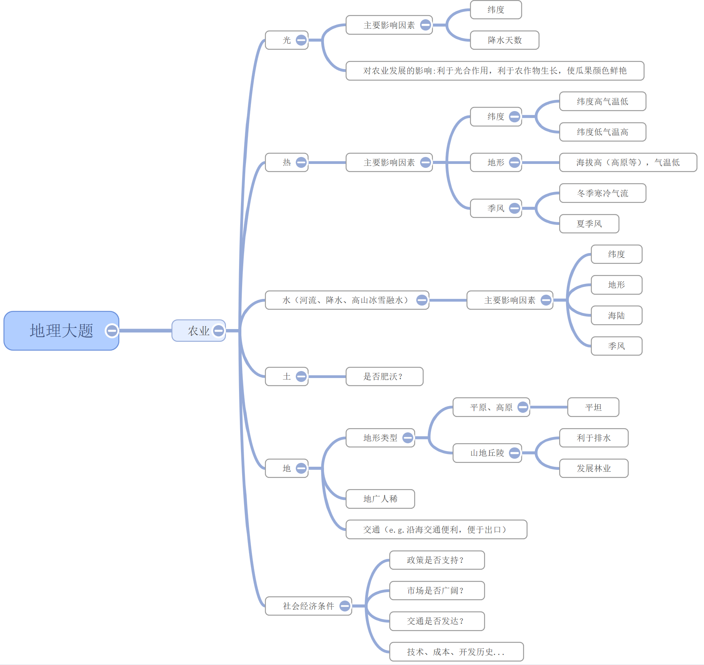
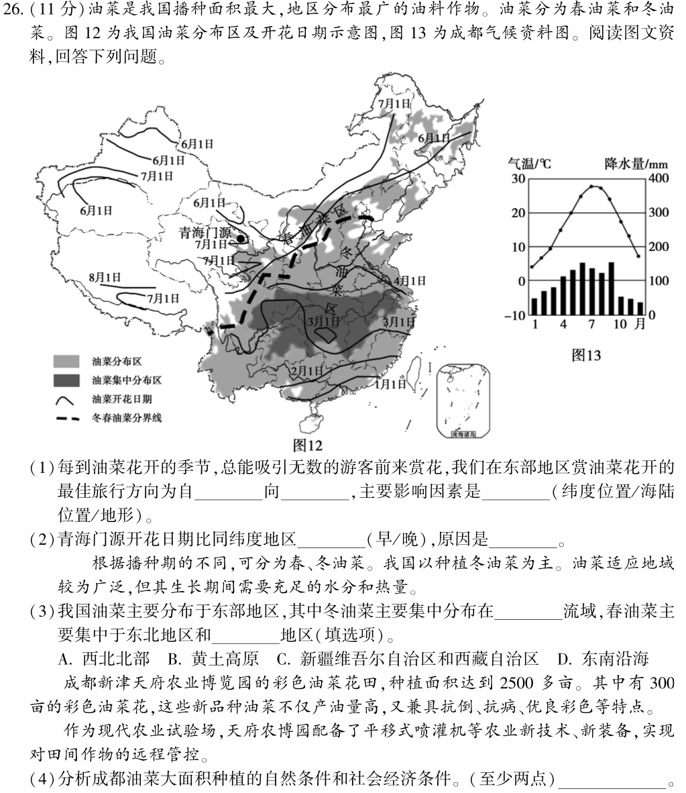
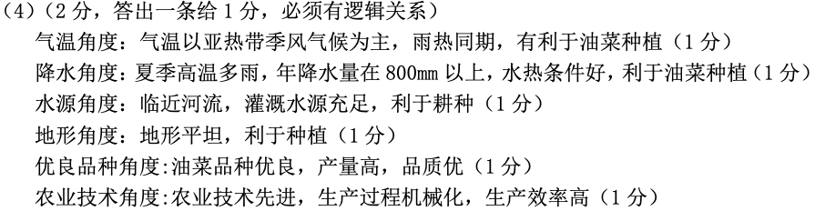

因地制宜发展农业
关注题目中的材料
- 地图类：等高线、等温线、分层设色、经纬&海陆、交通...
- 统计图：降水量&温度...
- 农作物发展条件：光热水土地...
结合材料分析
找出该地区实际条件和农作物发展所需条件相符的部分
气候：当地以...气候类型为主；（_月-_月）降水大于/小于...毫米；（_月-_月）气温大于/小于...摄氏度；雨热同期；昼夜温差大；适宜该农作物生长
地形：平原广阔；丘陵众多...
水源：临近河流...
光照：晴天多，光照充足...
土地：肥沃...
要有逻辑关系
e.g. 因为当地属亚热带季风气候，夏季高温多雨，水热条件好，所以适宜...种植
分析当地自然环境对农业的影响
- 光：光照充足/日照时间长-有利于糖分积累
- 热：寒冷、温暖、炎热
- 水：水源是抑制、促进农业的主要因素。一般来说，沿河湖（淡水湖）水源充足，南方地区水源较充足，山麓地带有高山冰雪融水，水源充足
- 土：土壤是否肥沃--东北三省的黑土地较肥沃，南方地区的红土地呈酸性，不适宜种庄稼，但适合种茶叶
- 地：地表平坦/坡度大。平坦适合大规模机械化耕种，有坡度的地排水较好
- 雨热同期
分析方向

除自然条件外其他影响农业发展的条件
- 科学技术--自动化程度，机械化程度
- 交通便利
- 劳动力（若自动化程度高的话就不需要太多劳动力了）
例题1(下图第二小问）

标答
